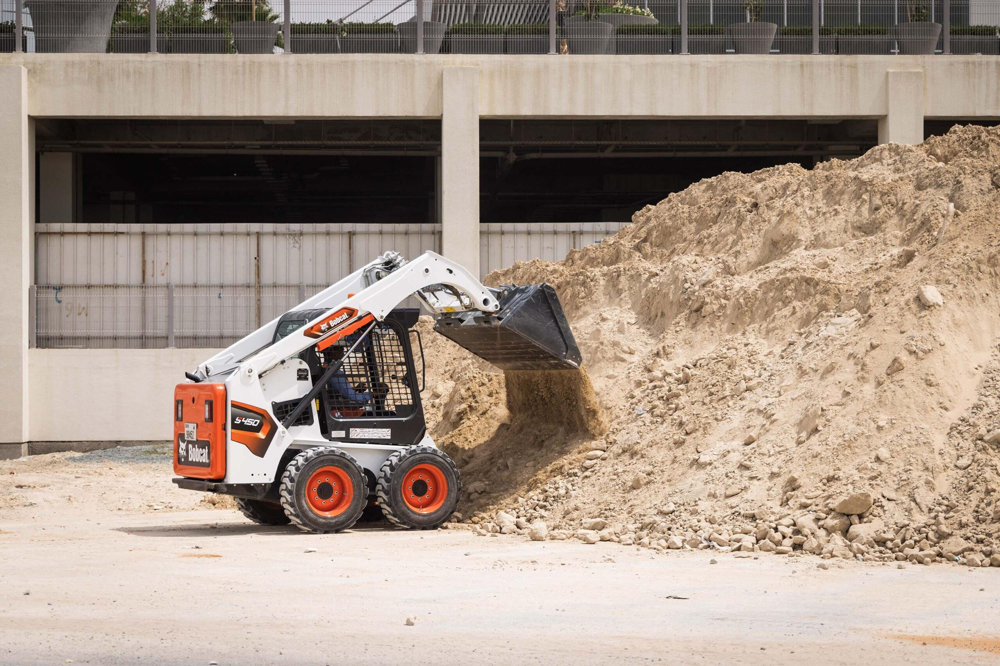

Hizmet Detayı
Eskişehir ve Afyonkarahisar bobcat hizmeti; dar alanlarda hızlı hareket edebilen, kısa süreli veya planlı saha işlerinde pratik çözüm sunan küçük iş makinesi desteğidir. İşin kapsamına göre çalışma süresi ve ekipman planı belirlenir.
Yapılan İşler
- Kazı, dolgu ve hafriyat desteği
- Zemin tesviye ve saha düzenleme
- Bahçe, tarla, depo çevresi ve şantiye hazırlığı
Neden Bobcat?
- Dar alanlarda rahat çalışır.
- Küçük ve orta ölçekli işler için hızlı çözüm sağlar.
- Planlı işlerde zaman ve iş gücü tasarrufuna yardımcı olur.
Eskişehir ve Afyonkarahisar'da Bobcat Hizmeti Bölgeleri
Çifteler, Odunpazarı, Tepebaşı, Mahmudiye, Sivrihisar, Alpu, Seyitgazi, Afyonkarahisar Merkez, Emirdağ, Bolvadin, Çay, Dinar, Sandıklı ve Şuhut çevresinde bobcat ile kazı, dolgu, tesviye, saha düzenleme ve küçük iş makinesi talepleri konuma göre planlanır.
Bobcat Hizmeti SSS
Bobcat hangi işler için tercih edilir?
Dar alan kazısı, bahçe düzenleme, dolgu, hafriyat desteği, zemin tesviye ve şantiye hazırlığı gibi işlerde bobcat hızlı ve pratik bir çözümdür.
İlçelere bobcat hizmeti geliyor mu?
Eskişehir ve Afyonkarahisar çevresindeki ilçelerde bobcat talepleri alınır. Çifteler ve Emirdağ başta olmak üzere konuma ve iş kapsamına göre planlama yapılır.
Fiyat nasıl belirlenir?
Fiyat; işin süresi, zeminin durumu, çalışma alanı, konum ve ekipman ihtiyacına göre netleşir. En doğru bilgi için iş alanı ve konum paylaşılması gerekir.